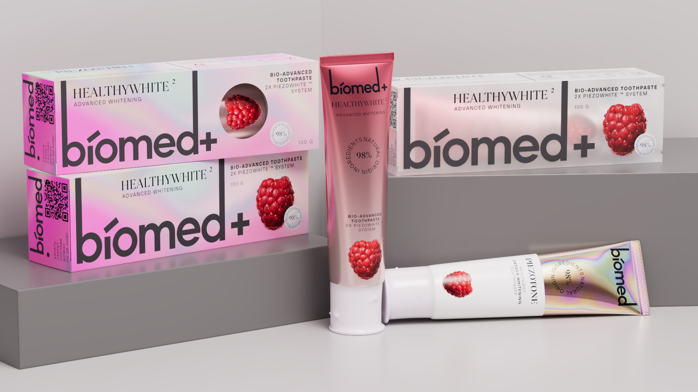
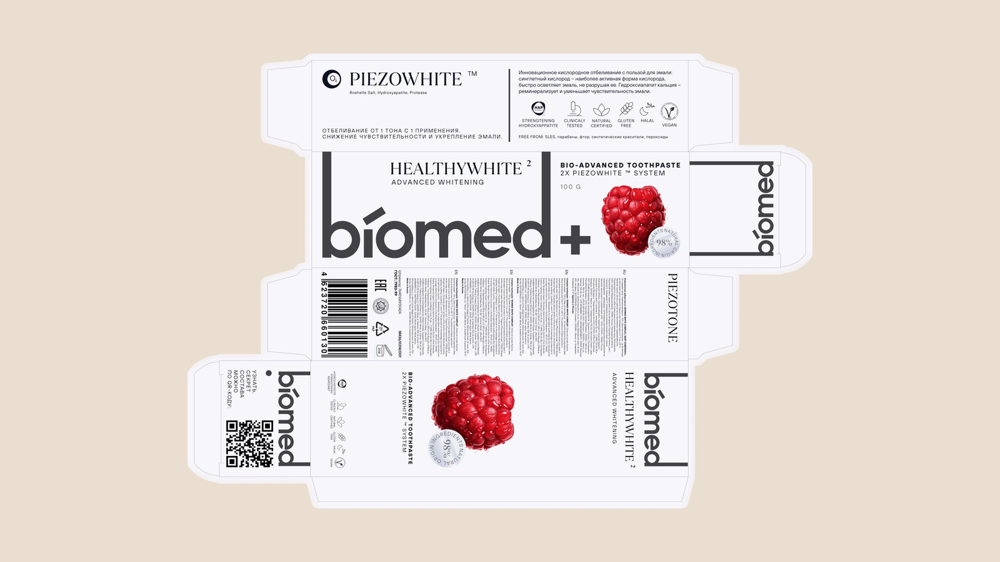
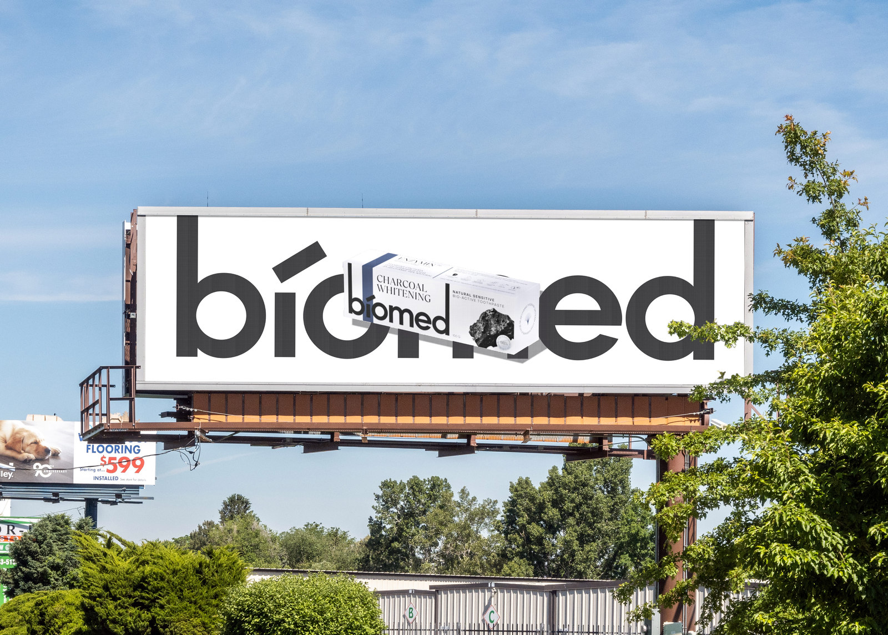

Biomed
Biomed are innovative dental products, inspired by nature and developed scientifically. The brand philosophy emphasizes high naturalness combined with proven effectiveness, accessible to everyone. The design of Biomed packaging is rooted in the concept of three main "pillars": naturalness, effectiveness, and emotional appeal. It stands out with unique textures and shades that express the gentle and pleasant taste of the products. Bright and attractive packaging elements emphasize the innovative nature of the brand and the use of biotechnology. Each Biomed package is designed for "rational hedonists" - people willing to invest in a high-quality product that brings joy in its use.


